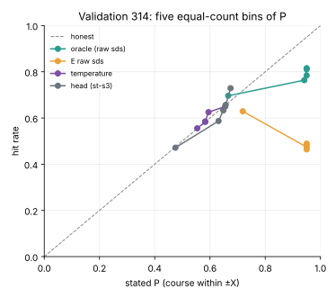
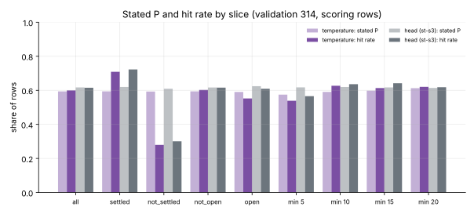

Gate 4: a course statement an operator can act on?
2026-11-09 · spec 009, Gate 4 · gitma2 · stopped at validation (panel round 2)
The statement
- Course: "within ±X (at most 45°) with probability P, otherwise unknown": a von Mises around E's course mixed with a uniform
- Range and speed: 95% intervals, trained on the interval score of the exact errors
- A learned head on E's features against a classical per-slice temperature on sd^β
- E's points never change
Gate 3's lesson: an honest Gaussian course interval covers the whole circle on half the rows.
Raw sds overclaim; the fitted statements sit on the diagonal on average

E's raw sds claim P 0.95 and hit about 0.47. The head and the temperature track the diagonal, but P spans only 0.46–0.68, and the head's top bin (0.675 stated, 0.729 hit) misses the ±0.05 band.
Honest on average, not after a manoeuvre

On rows still settling after a target manoeuvre (a quarter of rows) both statements say about 0.6 and are right 0.3 of the time; on settled rows they are under-confident.
The validation verdict (carried st-s3)
| Check | Value | Outcome |
|---|
| G4-a range / speed coverage | 0.940 / 0.929 [0.915, 0.941] | pass / inconclusive |
| G4-b reliability overall / top bin | −0.002 / +0.054 | pass / fail |
| G4-c log gain, mean P | +1.01, 0.62 | pass |
| G4-d head − temperature | −0.235 [−0.355, −0.137] | pass |
| G4-e points | identical | pass |
The rule needs every point inside its band: stopped at validation, seed 320 not generated.
What the panel found
- The top-bin miss is the isotonic map's cap at 0.677, not the head; the per-bin band is only about 2.5 sampling sd wide
- 72% of the head's margin is reproducible by a quadratic rule in E's three log sds fitted on tuning rows
- The shuffled control kept the sds, so it could not show per-row information
- The recalibrated P and the scored density disagree by up to 0.2 on a row
Not achieved
- Reliability where it matters: unsettled rows, minute 5, beyond 30 km
- A learning claim beyond a classical function of the sds
- One self-consistent course probability
Next (spec 010, recommended)
- One probability: exact von Mises mass, the density recalibrated with P, a smoother map
- Reliability gated by slice, with a causal "unsettled" proxy that lowers P
- Interval-based per-bin checks
- Register a cross-sd classical control and an encoder-only shuffle before any result